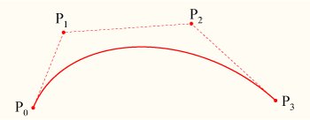

ASS Tags
From Aegisub Manual
The following is a list of every tag supported by the Advanced Substation Alpha format. This is basically a detailed version of ass-quickref.txt. See the tutorial for an introduction to typesetting, using some basic tags.
Override tags always follow the same form: They start with a backslash \ character, then a name, and after the name a parameter to the tag.
Some tags are "complex" and take more than one parameter, in that case the parameters are put inside parentheses with commas between the parameters.
Note on typography:
On this page, everything written in italics with < angle brackets > around, means it is a parameter and you must enter a value instead of it. The angle brackets are not part of the value you should enter. Use the examples as a guide to how the tags should be entered. In general, the same rules apply to all tags, in how they look.
Special characters
The following tags are written in the middle of the text, and not inside override blocks (i.e. not between { and }).
Soft line break
\n
Insert a forced line break, but only when in wrapping mode 2. (See the \q tag.) Note that this is a lowercase n.
In all other wrapping modes, this is replaced by a regular space.
Hard line break
\N
Insert a forced line break, regardless of wrapping mode. Note that this is an uppercase N.
Hard space
\h
Insert a non-breaking "hard" space. The line will never break automatically right before or after a hard space, and hard spaces are not folded when they appear at the start or end of a displayed line.
Override tags
These tags must be in an override block, that is, they must be between a { and a }, and will affect all text following the block, unless they get re-overridden.
Italics
\i1
\i0
Switch italics text on or off. Use \i1 to enable italics for the following text and \i0 to disable italics again.
Bold
\b1
\b0
\b<weight>
Switch boldface text on or off. Use \b1 to enable boldface for the following text and \b0 to disable boldface again.
The \b<weight> form allows you to specify an explicit weight to use. Note that most fonts only support one or two weights so you rarely need to use this. Font weights are multiples of 100, such that 100 is the lowest, 400 is "normal", 700 is "bold" and 900 is the heaviest.
Example
I am {\b1}not[\b0} amused.
The word "not" is written in boldface.Example
{\b100}How {\b300}bold {\b500}can {\b700}you {\b900}get?
The words are written with increasingly greater weight. Note that most fonts do not have more than one or two different weights and you will only be able to see "not bold" and "bold" in that case.Underline
\u1
\u0
Switch underlined text on or off. Use \u1 to enable underlining for the following text and \u0 to disable underlining again.
Strikeout
\s1
\s0
Switch striked out text on or off. Use \s1 to enable strikeout for the following text and \s0 to disable strikeout again.
Border size
\bord<size>
Change the width of the border around the text. Set the size to 0 (zero) to disable the border entirely.
If "scale border and shadow" (see script properties) is enabled, the value is given in script resolution pixels, otherwise it is given in video resolution pixels (which means the border thickness will vary depending on the resolution of the video on which the subtitles are rendered.)
The value is not limited to whole integer pixels, it can have decimal places.
Example
\bord0Disable border entirely.
Example
bord3.7Set the border width to 3.7 pixels
Border size (extended)
\xbord<size>
\ybord<size>
- These tags are only available in VSFilter 2.39 and later, and might not be safe for softsubbing.
Use the \xbord \ybord tags to set the border size in X and Y direction separately. This can be useful for correcting the border size for anamorphic rendering of subtitles.
Note that if you use \bord after \xbord or \ybord on a line, it will override both of them.
You can set the border width to 0 (zero) in one of the directions to entirely disable border in that direction.
Shadow distance
\shad<depth>
Set the distance from the text to position the shadow. Set the depth to 0 (zero) to disable shadow entirely. Works similar to \bord.
The shadow distance can not be negative with this tag.
Shadow distance (extended)
\xshad<depth>
\yshad<depth>
- These tags are only available in VSFilter 2.39 and later, and might not be safe for softsubbing.
Set the distance from the text to position the shadow at, with X and Y position set separately. Shadow is only disabled if both X and Y distance is 0.
Note that you can set the distance negative with these tags to position the shadow to the top or left of the text.
Blur edges
\be0
\be1
\be<strength>
- The
\be<strength>version is only available in VSFilter 2.39 and later and might not be safe for softsubbing.
Enable or disable a subtle softening-effect for the edges of the text. The effect isn't always very visible, but it can in some cases make the text look better. It is usually more visible at smaller text sizes.
Be aware that this tag blurs the edges of the text, not everything. This means that if the text has a border (set with \bord) the border will be blurred, but if there is no border, the main text will be blurred instead.
In the extended version, strength is the number of times to apply the regular effect. Note that at high values the effect de-generates into nothingness, and generally isn't very useful. The strength must be an integer number.
Blur edges (gaussian kernel)
\blur<strength>
- This tag is only available in VSFilter 2.39 and later, and might not be safe for softsubbing.
In general, this has the same function as the \be tag, but uses a more advanced algorithm that looks better at high strengths. Unlike \be, the strength can be non-integer here. Set strength to 0 (zero) to disable the effect. Be careful, setting strength too high can take a lot of CPU time to render.
Be aware that this tag blurs the edges of the text, not everything. This means that if the text has a border (set with \bord) the border will be blurred, but if there is no border, the main text will be blurred instead.
Font name
\fn<name>
Set the font face to use for the following text. There should be no space between \fn and the font name, and you should not put parentheses or similar around the font name either.
Example
\fnArialThe text following this tag will be in Arial font.
Example
\fnTimes New RomanThe text following this tag will be in Times New Roman font.
Font size
\fs<size>
Set the size of the font. The size specified is the height in script pixels, so at font size 40 one line of text is 40 pixels tall. (Technical note: it's really typographic (desktop publishing) points, not script pixels, but since the rendering is always done at 72 DPI (as per the de facto standard), one point ends up being exactly equal to one script resolution pixel.)
You can only specify integer font sizes.
Example
\fs10The following text will use a size 10 font.
Font scale
\fscx<scale>
\fscy<scale>
Adjust the size of the text in X (\fscx or Y (\fscy) direction. The scale given is in percent, so 100 means "original size".
This is not the same as setting the font size, as setting the size is subject to font hinting while scaling the text modifies the text shape after hinting.
These tags also affect vector drawings.
You can use font scaling to correct for anamorphic rendering and to specify text size more precisely than with \fs.
Example
\fscx150Make the text 50% wider than normal.
Example
\fscy50Make the text half height.
Example
\fscx200\fscy200Make the text double size.
Letter spacing
\fsp<spacing>
Changes the spacing between the individual letters in the text. You can use this to spread the text more out visually. The spacing is given in script resolution pixels.
Text rotation
\frx<amount>
\fry<amount>
\frz<amount>
\fr<amount>
Rotates the text along the X, Y or Z axis. The \fr tag is a shortcut for \frz.
- The X axis runs horizontally on the screen. Rotating on it (with positive values) causes an effect where the top of the text moves farther "into" the screen while the bottom moves "out" of the screen.
- The Y axis runs vertically on the screen. Rotating on it (with positive values) causes the text to rotate so that the left moves "outside" the screen, when the right moves "into" the screen.
- The Z axis runs perpendicular to the screen. Rotating on it (with positive values) causes the text to rotate in 2D, counterclockwise (as standard for degrees).
The rotation amount is given in mathematical degrees, such that 360 degrees is a full rotation, and rotating any multiple of 360 is the same as not rotating. It is legal to specify negative rotation amounts, as well as amounts larger than 360 degrees.
The rotation is performed around the subtitle line origin point, this is described with the \org tag.
These tags also affect vector drawings.
Example
\frx45Rotate the text 45 degrees on the X axis.
Example
\fry-45Rotate the text 45 degrees in opposite direction on the Y axis.
Example
\frz180Rotate the text 180 degrees on the Z axis, making it upside-down.
Example
\frz-30 \frz330This is because 330 degrees is 30 degrees less than a full rotation of 360 degrees.
Example
\t(\frz3600)Perform an animation where the text performs 10 full revolutions on the Z axis. Also see the \t tag.
Example
Text shearing
\fax<factor>
\fay<factor>
- These tags are only available in VSFilter 2.39 and later, and might not be safe for softsubbing.
Perform a shearing (perspective distortion) transformation of the text. A factor of 0 (zero) means no distortion.
Usually factor will be a small number, not larger than 2 as that creates a very strong distortion.
Shearing is performed after rotation, on the rotated coordinates. The coordinate system used for shearing is not affected by the rotation origin.
Font encoding
\fe<id>
Set the Windows font encoding used to select the font mapping table used to translate Unicode codepoints to glyph indices in the font. For some fonts without a Unicode mapping table this might be required to get text in certain languages to work. For fonts that do have a Unicode mapping table, it might be used to pick regional variations, such as picking the correct glyph for a Han ideogram that is different in Simplified Chinese, Traditional Chinese, Japanese and Korean.
Some common font encoding ID's are:
- 0 - ANSI, Windows CP-1252 for Western-European languages.
- 1 - Default, depends on the configuration of the user's system, but also allows the font sub-system to dynamically pick a different mapping table in some circumstances.
- 2 - Symbol, codepoints in the 0-255 range are translated to per-font defined symbol glyphs, this is used for fonts such as Wingdings.
- 128 - Shift-JIS, used for Japanese.
- 129 and 130, respectively Hangeul and Johab, two encoding schemes for Korean.
- 134 - GB2312, used for Simplified Chinese.
- 136 - BIG5, used for Traditional Chinese.
- 162 - Turkish.
- 163 - Vietnamese.
- 177 - Hebrew.
- 178 - Arabic.
A more complete list can be seen the style editor dialog box.
In ASS files stored in non-Unicode encodings, this tag also affects what codepage the text following it should be interpreted in. Aegisub doesn't support this use and some renderers might not support it either, it is recommended you do not rely on this and instead always store your files in a Unicode encoding. (Aegisub stores files in Unicode UTF-8 by default.)
Set color
\c&H<bb><gg><rr>&
\1c&H<bb><gg><rr>&
\2c&H<bb><gg><rr>&
\3c&H<bb><gg><rr>&
\4c&H<bb><gg><rr>&
Set the color of the following text. The \c tag is an abbreviation of \1c.
-
\1csets the primary fill color. -
\2csets the secondary fill color, this is only used for pre-highlight in standard karaoke. -
\3csets the border color. -
\4csets the shadow color.
The color codes are given in hexadecimal in Blue Green Red order. Note that this is the opposite order of eg. HTML color codes. Color codes must always start with &H and end with &.
The Pick Color toolbar buttons can assist in picking colors and entering the color codes.
Set alpha
\alpha&H<aa>
\1a&H<aa>
\2a&H<aa>
\3a&H<aa>
\4a&H<aa>
Set the alpha (transparency) of the text.
-
\alphasets the alpha of all components at once. -
\1asets the primary fill alpha. -
\2asets the secondary fill alpha, this is only used for pre-highlight in standard karaoke. -
\3asets the border alpha. -
\4asets the shadow alpha.
An alpha of 00 (zero) means opaque/fully visible, and an alpha of FF (ie. 255 in decimal) is fully transparent/invisible.
Example
\alpha&H80&Set the alpha of all components to hexadecimal 80, decimal 128, making the text 50% transparent in general.
Example
\1a&HFF&Set the primary fill alpha to hexadecimal FF, decimal 255, making it invisible and effectively leaving only the border and shadow.
Line alignment
\an<pos>
Specify the alignment of the line. The alignment specifies the position of the line when no position override or movement is in effect, and otherwise specifies the anchor point of positioning.
The \an tag uses "numpad" values for the pos, ie. the alignment values correspond to the positions of the digits on the numeric keypad on a regular keyboard:
- 1: Bottom left
- 2: Bottom center
- 3: Bottom right
- 4: Middle left
- 5: Middle center
- 6: Middle right
- 7: Top left
- 8: Top center
- 9: Top right
Line alignment (legacy)
\a<pos>
Specify the alignment of the line using legacy alignment codes from SubStation Alpha. This tag is supported but considered deprecated; you should usually use \an in new scripts instead, as it is more intuitive.
Calculate pos as follows: Use 1 for left-alignment, 2 for center alignment and 3 for right-alignment. If you want sub-titles you're done. To get top-titles, add 4 to the number, to get mid-titles add 8 to the number:
- 1: Bottom left
- 2: Bottom center
- 3: Bottom right
- 5: Top left
- 6: Top center
- 7: Top right
- 9: Middle left
- 10: Middle center
- 11: Middle right
Karaoke effect
\k<duration>
\K<duration>
\kf<duration>
\ko<duration>
- Please note that these tags alone only create some very specific effects and all other effects are created with a combination of multiple different tags.
The \k family of tags mark up subtitles for karaoke effects by specifying the duration of each syllable. You place a \k tag before each syllable in the line.
The duration is given in centiseconds, ie. a duration of 100 is equivalent to 1 second. You generally don't enter \k tags manually but rather use karaoke timing tools such as Aegisub's karaoke mode.
The different \k tags create various effects:
-
\k: Before highlight, the syllable is filled with the secondary color and alpha. When the syllable starts, the fill is instantly changed to use primary color and alpha. -
\Kand\kf: These two are identical. Note that\Kis an uppercase K and is different from lowercase\k. The syllable fill starts out secondary color, when the syllable starts, the fill changes from secondary to primary with a sweep from left to right, so the sweep ends when the syllable time is over. -
\ko: Similar to\k, except that before highlight, the border/outline of the syllable is removed, and appears instantly when the syllable starts.
Note: There is an additional karaoke tag, \kt, which is very different from the other ones. Aegisub does not support that tag and so it is not documented.
Wrap style
\q<style>
Determine how line breaking is applied to the subtitle line. The following styles are available:
- 0: Smart wrapping, make each line approximately equally long, but top line wider when equal width is impossible. Only
\Nforces line breaks. - 1: End-of-line wrapping, fill as much text in a line as possible, then break to next line. Only
\Nforces line breaks. - 2: No word wrapping, wide lines will extend beyound the edges of the screen. Both
\nand\Nforce line breaks. - 3: Smart wrapping, similar to style 0, but bottom lines are made wider.
Reset style
\r
\r<style>
Reset the style. This cancels all style overrides in effect, including animations, for all following text.
The first form that does not specify a style will reset to the style defined for the entire line, while the second form, that specifies the name of a style, will reset the style to that specific style.
Example
-Hey\N{\rAlternate}-Huh?\N{\r}-Who are you?
Assuming the current line style is "Default", this has first "Hey" in the Default style, then follows on next line "Huh?" in the style "Alternate", and on the third line the style is reset to "Default" for the "Who are you?" text.Set position
\pos(<X>,<Y>)
Set the position of the line. The X and Y coordinates must be integers and are given in the script resolution coordinate system. The meaning of X and Y changes slightly depending on alignment.
- In VSFilter 2.39 and later, you can use non-integer numbers for coordinates. Note that this might not be safe for softsubbing.
The alignment of the subtitle line is used as anchor point for the position, eg. when you have a line with alignment top-left, the top-left corner of the subtitle is placed at the coordinates given to \pos, and for bottom-center alignment, the bottom center of the subtitle is placed at the coordinates given.
Example
Movement
\move(<x1>,<y1>,<x2>,<y2>)
\move(<x1>,<y1>,<x2>,<y2>,<t1>,<t2>)
The \move tag works similar to \pos in that it positions the subtitle line, the difference is that \move makes the subtitle move.
The two versions of \move differ in that one makes the movement occur over the entire duration of the subtitle, while on the other you specify the time over which the movement occurs.
The coordinates x1, y1, x2 and y2 are given in the script resolution coordinate system, like \pos. The subtitle starts out at point (x1,y1) and moves with constant speed so it ends up at (x2,y2). Alignment influences movement coordinates the same way as it influences \pos coordinates.
- In VSFilter 2.39 and later, you can use non-integer numbers for the X and Y coordinates. Note that this might not be safe for softsubbing.
In the second version, the times t1 and t2 are given in milliseconds, ie. one thousandth of a second, and are relative to the start time of the subtitle. For example, a t1 value of 1500 means that the movement begins 1.5 seconds (one and a half second) after the line has appeared on screen. When you specify times for the movement, the position of the subtitle is as follows:
- Before t1, the subtitle is stationary at point (x1,y1).
- Between t1 and t2, the subtitle moves with constant speed from (x1,y1) to (x2,y2).
- After t2 the subtitle is stationary at point (x2,y2).
Note that it is legal to have t1 and t2 specify times greater than the duration of the line, but it might not be very useful to do so. Specifying both t1 and t2 as 0 (zero) is the same as using the first version of \move, ie. the movement will occur from the start time of the line to the end time of the line.
There are some things \move can not do:
- Non-constant-speed movement is not possible. The movement can not, for example, start out slow and end fast.
- There can only be one positioning or movement tag in a line. Putting both a
\posand a\movetag in a line will not work. It will also not work to put two or more\movetags in a single line.
If you need to do do any of those two you will need to split the movement into segments that are done on separate subtitle lines. (How to do this is outside the scope of this page.)
Example
\move(100,150,300,350)When the line appears on screen, the subtitle is at (100,150). While the subtitle is displayed, it moves at constant speed such that it will arrive at point (300,350) at the same time it disappears.
Example
\move(100,150,300,350,500,1500)The line appears at (100,150). After the line has been displayed for half a second (500 milliseconds) it begins moving towards (300,350) such that it will arrive at the point a second and a half (1500 milliseconds) after the line first appeared on screen.
Rotation origin
\org(<X>,<Y>)
Set the origin point used for rotation. This affects all rotations of the line. The X and Y coordinates are given in integer script resolution pixels.
When there is no \org tag in a line, the rotation origin is implicitly the same as the position anchor point. This means that the rotation origin will move if the line moves and there is no origin set with \org. Note that you can not animate the \org tag, you are limited to a fixed origin if you use it.
If the rotation origin is placed on the vanishing point in a 3D scene, 3D rotations of subtitle line will produce the correct perspective to match the scene.
It's perfectly possible (and occasionally useful) to place the origin point far outside the actual image; if it is sufficiently far away, doing appropriately calculated small rotations will seem to move the text along a straight (or almost straight) line through the image. This is somewhat hard to control, but can be used to work around format limitations with \move, such as the inability to do accelerated moves or several moves per line.
There can be at most one \org tag in a single line, if you put more than one in a single line, only the first is used.
Example
\org(320,240)Fix the rotation origin at point (320,240).
Example
\org(10000,0)Placing the rotation origin at a far away point allows you to use slight
\frz rotations to produce "jumping" effects; the text will move up or down without seeming to rotate.Fade
\fad(<fadein>,<fadeout>)
Produce a fade-in and fade-out effect. The fadein and fadeout times are given in milliseconds, ie. 1000 means one second. You can specify fadein or fadeout as 0 (zero) to not have any fade effect on that end.
Adding a fade effect does not extend the duration of the line, rather the start or end of the line's display time is used for the fade effect. For this reason, you should be careful that fadein+fadeout is not greater than the duration of the line. For example, for a line displayed for 4 seconds, the sum of fadein+fadeout should not be greater than 4000.
Example
\fad(1200,250)Fade in the line in the first 1.2 seconds it is to be displayed, and fade it out for the last one quarter second it is displayed.
Fade (complex)
\fade(<a1>,<a2>,<a3>,<t1>,<t2>,<t3>,<t4>)
Perform a five-part fade using three alpha values a1, a2 and a3 and four times t1, t2, t3 and t4.
The alpha values are given in decimal and are between 0 and 255, with 0 being fully visible and 255 being invisible. The time values are given in milliseconds after the start of the line. All seven parameters are required. (For most common fade effects the \fad tag works fine.)
- Before t1, the line has alpha a1.
- Between t1 and t2 the line fades from alpha a1 to alpha a2.
- Between t2 and t3 the line has alpha a2 constantly.
- Between t3 and t4 the line fades from alpha a2 to alpha a3.
- After t4 the line has alpha a3.
Example
\fade(255,32,224,0,500,2000,2200)Starts invisible, fades to almost totally opaque, then fades to almost totally invisible. First fade starts when the line starts and lasts 500 milliseconds. Second fade starts 1500 milliseconds later, and lasts 200 milliseconds.
Animated transform
\t(<style modifiers>)
\t(<accel>,<style modifiers>)
\t(<t1>,<t2>,<style modifiers>)
\t(<t1>,<t2>,<accel>,<style modifiers>)
Perform a gradual, animated transformation from one style to another. The style modifiers are other override tags as specified in this reference. Only a limited set of the override tags are animateable with \t:
| Font | Geometry | Other effects |
|---|---|---|
| \fs \fsp |
\fscx \fscy |
\bord \shad |
- In VSFilter 2.39 and later, the following additional tags can also be animated with
\t: - \fax \fay \be \blur \xbord \ybord \xshad \yshad \iclip
Note: For \clip and \iclip, only the rectangle versions can be animated. The vector drawing versions cannot be animated.
The t1 and t2 parameters specify the time interval to perform the transformation over. In the versions without t1 and t2 the transformation is performed over the entire duration of the line. The times are given in milliseconds and are relative to the start time of the line. (For the rest of the description of \t, t1 and t2 are assumed to be specified, or implicitly be respectively 0 and the duration of the line.)
The accel parameter can be used to make the animation non-linear and instead follow an exponential curve. An accel parameter of 1 (one) causes the animation speed to be linear. A value bewteen 0 and 1 causes the animation to start fast and end slow. A value greater than 1 causes the animation to start slow and end fast. (For the mathematically inclined, the function is y = xaccel with x ∈ [0;1] = (t-t1)/(t2-t1), t being the current time.)
Before t1, the style is as all tags before the \t tag specify. After t2 the style is as all tags before the \t tag, and further overridden by the given style overrides. Between t1 and t2 the style is gradually animated between those two points, following the acceleration function described above.
Example
{\1c&HFF0000&\t(\1c&H0000FF&)}Hello!
The text starts out blue, but fades towards red so it is completely red when the line ends.Example
{\an5\t(0,5000,\frz3600)}Wheee
Makes the text rotate 10 times, counterclockwise, lasting for 5 seconds.Example
{\an5\t(0,5000,0.5,\frz3600)}Wheee
Same as above, but it will start fast and slow down, still doing the 10 rotations in 5 seconds.Example
{\an5\fscx0\fscy0\t(0,500,\fscx100\fscy100)}Boo!
Text starts at zero size, ie. invisible, then grows to 100% size in both X and Y direction.Clip (rectangle)
\clip(<x1>,<y1>,<x2>,<y2>)
\iclip(<x1>,<y1>,<x2>,<y2>)
- The
\icliptag is only available in VSFilter 2.39 and later, and might not be safe for softsubbing.
Define a rectangle to clip the line, only the part of the line that is inside the rectangle is visible. The \iclip tag has the opposite effect, it defines a rectangle where the line is not shown.
The x1, y1, x2 and y2 coordinates are given in script resolution pixels and are relative to the top-left corner of the video. The coordinates must be integers, there is no possibility to use non-integer coordinates. (Increasing the script resolution will not increase the precision, the clipping always happens on video pixel boundaries.)
Note: If you use the \iclip tag anywhere on a line, all clips on that line will be treated as "inverse" regardless of whether a regular \clip occurs later or the \iclip has taken effect yet through \t or similar.
Example
\clip(0,0,320,240)Assuming 640x480 script resolution, only the part of the line within the top left quadrant is visible.
Example
\iclip(0,0,320,240)Similar to above, but instead the part of the line within the top left quadrant is hidden.
Clip (vector drawing)
\clip(<drawing commands>)
\clip(<scale>,<drawing commands>)
\iclip(<drawing commands>)
\iclip(<scale>,<drawing commands>)
- The
\icliptags are only available in VSFilter 2.39 and later, and may not be safe for softsubbing.
Use the shape defined by a vector drawing to selectively display (\clip) or hide (\iclip) parts of the line.
The drawing commands are drawing commands as those used with the \p tag, the coordinates are given in script resolution pixels and are relative to the top left corner of the video.
If the scale is not specified it is assumed to be 1 (one), meaning that coordinates correspond directly to pixels. The scale works the same way as the scale for \p drawings.
Unlike the rectangular clip, the vector drawing clip can not be animated with \t. If you need to animate a vector drawing clip, you must create multiple similar subtitle lines with each their own "frame" of the clipping animation.
Example
\clip(1,m 50 0 b 100 0 100 100 50 100 b 0 100 0 0 50 0)Only show the portion of the line within the defined pseudo-circle.
Beware: VSFilter 2.37 has a bug that causes vector drawing clips to be rendered incorrectly. The solution is to use a newer or older version.
Note: If you use the \iclip tag anywhere on a line, all clips on that line will be treated as "inverse" regardless of whether a regular \clip occurs later or the \iclip has taken effect yet through \t or similar.
Drawing tags
Advanced Substation Alpha also supports some advanced drawing tags that allow you to draw with vectorial graphics. Certain familiarity with vectors and splines will make the understanding of this much simpler.
\p<0/1/..> - Toggle drawing mode
Setting this tag to 1 or above enables drawing mode. Text after this override block will then be interpreted as drawing instructions, and not as actually visible text. Setting this to zero disables drawing mode, restoring normal behavior. When turning on, the value might be any integer larger than zero, and will be interpreted as the scale, in 2^(value-1) mode. This is done to allow sub-pixel accuracy. e.g.:
\p1
(Enables drawing with normal coordinates)
\p0
(Disables drawing)
\p2
(Enables drawing, and resolution is doubled. So drawing to 200,200 will actually draw to 100,100)
\p4
(Enables drawing, and resolution is 8x larger (2^(4-1)). So drawing to 400,400 will actually draw to 50,50)
\pbo<y> - Baseline offset
Defines baseline offset for drawing. This is basically an Y offset to all coordinates. e.g.:
\pbo-50
(Draws everything 50 pixels above specified)
\pbo100
(Draws everything 100 pixels below specified)
Drawing commands
These commands should appear either in a \clip tag (vectorial overload) or between \p# and \p0, outside override blocks. For example (taken straight from the ASS specs):
- Square:
{\p1}m 0 0 l 100 0 100 100 0 100{\p0}
- Rounded square:
{\p1}m 0 0 s 100 0 100 100 0 100 c{\p0}
- (c equals to "p 0 0 100 0 100 100" in this case)
- Circle (almost):
{\p1}m 50 0 b 100 0 100 100 50 100 b 0 100 0 0 50 0{\p0}
- (note that the 2nd 'b' is optional here)
Drawing commands use the primary color for fill and outline color for borders. They also display shadow. The idea of drawing vectors is that there is an invisible "cursor" (think of it as the mouse pointer in a drawing program, or as a pen moving through the image) on the video frame, and you tell it to move to other positions. As it moves, it draws on the area behind it, and when you close the line formed, it fills it with the primary color.
m <x> <y> - Move
Moves the cursor to x,y. If you have an unclosed shape, it will automatically be closed, as the program assumes that you are now drawing a new, independent shape. All drawing routines must start with this command.
n <x> <y> - Move (no closing)
Moves the cursor to x,y, without closing the current shape.
l <x> <y> - Line
Draws a line from the current cursor position to x,y, and moves the cursor there afterwards.
b <x1> <y1> <x2> <y2> <x3> <y3> - Cubic Bézier curve
Draws a cubic (3rd degree) Bézier curve from the cursor position to (x3,y3), using (x1,y1) and (x2,y2) as the control points. Check the article on Wikipedia for more information about Bézier curves. In this picture taken from that article, P0 is the cursor position, P1 is x1,y1, P2 is x2,y2 and P3 is x3,y3:

Note that the curve begins at P0, heads towards P1, then arrives at P3 coming from P2's direction.
s <x1> <y1> <x2> <y2> <x3> <y3> .. <xN> <yN> - Cubic b-spline
Draws a cubic (3rd degree) uniform b-spline to point N. This must contain at least 3 coordinates (and is, in that case, the same as b). This basically lets you chain several cubic Bézier curves together. Check this other article on Wikipedia for more information.
p <x> <y> - Extend b-spline
Extends the b-spline to x,y. This is essentially the same as adding another pair of coordinates at the end of s.
c - Close b-spline
Closes the b-spline.